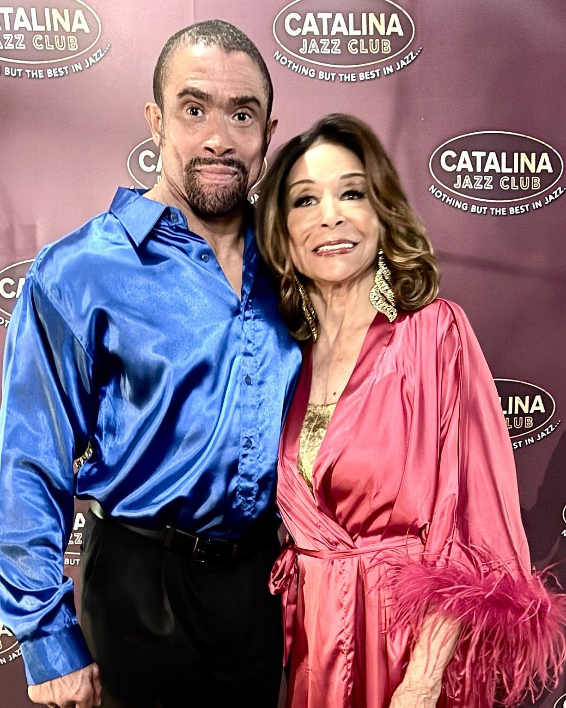

Press release
Freda Payne, 84, Still Standing: Sold-Out Los Angeles Show Honors the Women Who Built American Song
A legend gives thanks from the stage, and Gospel News Access calls the night a triumph.
FOR IMMEDIATE RELEASE · LOS ANGELES · September 30, 2026

Freda Payne is eighty-four years old, and last Saturday night she was still standing, still singing and still stopping the show.
“Freda Payne Portrays and Honors Legendary Ladies of Song” played to a sold-out Catalina Jazz Club at 6725 Sunset Boulevard in Los Angeles on September 26, 2026, one week after Payne’s birthday. Gospel News Access has published its review, “Freda Payne Made Time Stand Still,” and a full photographic report of the evening.
A thank-you in the program
The evening’s running sheet carries a note from its star. “Last week on September 19th, was my birthday,” Payne wrote. “I am so blessed to see another year and still be working. I thank God for that.”
The show was written and directed by Donald B. Welch and presented by Don B. Welch. “The idea of doing a show honoring the legendary ladies of song and jazz was brought to me by my friend, my dear friend Donald B. Welch,” Payne said.
Nine women, one voice
Payne honored Ella Fitzgerald, Sarah Vaughan, Peggy Lee, Gloria Lynne, Dakota Staton, Lena Horne, Nancy Wilson, Dinah Washington and Eartha Kitt. Her program included “How High the Moon,” “I Wish You Love,” “The Late Late Show,” “Body and Soul,” “Guess Who I Saw Today” and “Fever.”
Several of the women she sang for were people she knew. Of Sarah Vaughan she said her voice was “like listening to a violin or a viola. Very soothing.”
The company
Thomasina Gross opened the show portraying Eartha Kitt, a performance Payne called “spot on.” The evening was hosted and announced by Payne’s son, Gregory Abbott Jr. Josh Nelson served as musical director and pianist, with Chris Colangelo on bass, Ricky Woodard on saxophone and Marcello Carelli on drums. Actors Terryl DaLuz and Kyrel Jaundoo appeared, with Chuka Aruh and Mi-cha-El Wat as escorts.
Stefanie Powers and Loretta Devine were among the guests in the room, on a weekend when the MTV Video Music Awards drew cameras across Los Angeles.
What is next
Payne sails at the end of October aboard Holland America, performing on a cruise from Fort Lauderdale, Florida to Puerto Rico and back. Darlene Love and Wayne Newton are also on the bill.
Photographs and video
Photographs by Terry Bryant are available for editorial use with credit. Performance video from the evening is at youtu.be/MsRGnm458fo, youtu.be/Iu58ZFcRw6Q and youtu.be/mISIKPyYvig.
About Freda Payne
Freda Payne is a singer and actress whose career spans six decades, best known internationally for “Band of Gold.” For information on Payne, her memoir and her appearances, visit her official website, fredapayne.net.
About Gospel News Access
Gospel News Access is a news and music publication covering gospel, faith and culture, with reporting, charts, a video desk and a community development section.
— ENDS —
More information
Media contact
Terry Bryant · 646-315-2942 · info@newswirehollywood.com
Gospel News Access is an independent publication. Press inquiries are currently handled through the contact above.
Publicity: PR STARPOWER